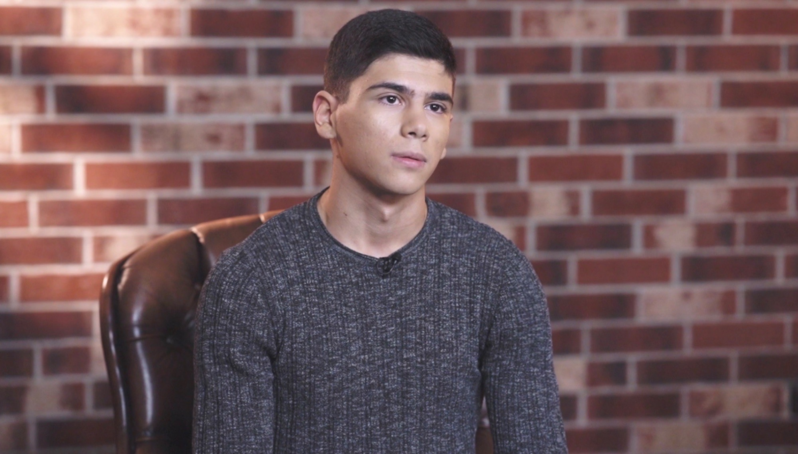

Ivan Rus

PROFESSIONAL SUMMARY
A highly driven, energetic, and goal-oriented Bartender who has completed Bartending School with an emphasis in Arts of
Mixology, Beer, Wine, & Bar Management, with over 2 years of bartending experience in fast-paced environments. Proficient
in bar operations, mixology, and customer service to create a positive and memorable guest experience. Adaptable to diverse
customer preferences with dedication to fostering a welcoming atmosphere and maintaining a customer-first mentality.
Utilizes strong communication to build rapport with customers and present menu offerings to meet their needs.
SKILLS & COMPETENCIES
- Team Leadership
- Interpersonal Communication
- Customer Service
- Attention to Detail
- Adaptable
EDUCATION
International Bartending School, Barscot, Inc. (Graduated: 2023)
Arts of Mixology, Beer, Wine, & Bar Management.
Saint Joseph’s University, Philadelphia, PA (Graduated: 2023)
ELS Language Center.
No. 316, Kiev, Ukraine (Graduated: 2021)
High School Diploma.
WORK EXPERIENCE
Dave & Busters (2023 – 2024)
Bartender
- Responsible for servicing drinks, food, and providing excellent customer service to a diverse customer base.
- Build immediate rapport with guests and demonstrate a complete understanding of menu items to explain them to
guests accurately and guide them towards food and beverage selections.
- Effectively manage money while crafting drinks in a high volume, fast-paced environment to hundreds of guests per
shift, ensuring each have a positive experience to create repeat business.
- Skillfully prepare standard and exotic mixed beverages in a timely manner to avoid long waits and unhappy guests.
- Ensure a clean and organize bar area to create a welcoming environment for guests and for workflow efficiency.
Orkhan, Kieve, Ukraine (2021 - 2022)
bartender
- Responsible for all levels of customer service by providing fast, efficient, and fun service to make all guests feel welcomed and special.
- Familiarized guests with menu and daily specials to drive sales growth as well as provide various drink options.
- Crafted drinks of various difficulty, poured beer, and created regulars through a positive service experience.
- Maintained thorough knowledge of the menu and preparation methods to provide cocktail taste and preference
offerings to guests, including selected beers on draft and bottle.
- Worked as a team player and utilized all communication tools and training to provide exceptional mixed drinks.
- Strictly adhered to workplace safety regulations including proper handling of beverages.
Additional Information
Contact me